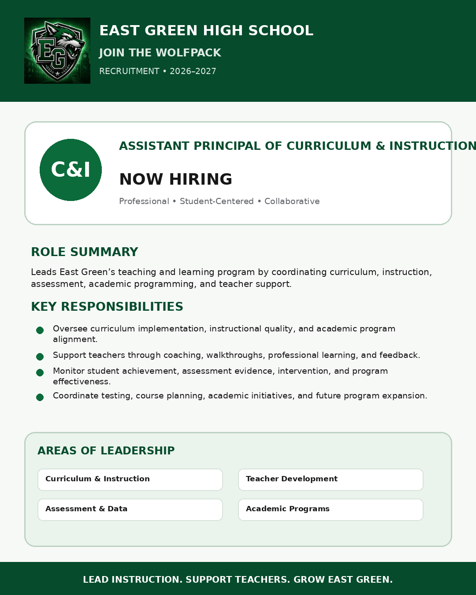
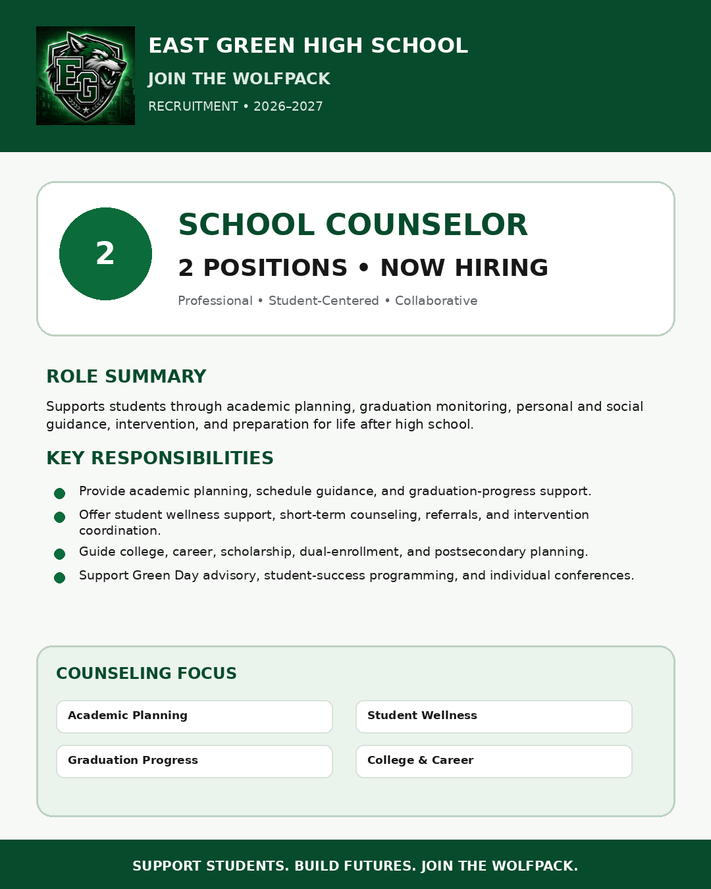
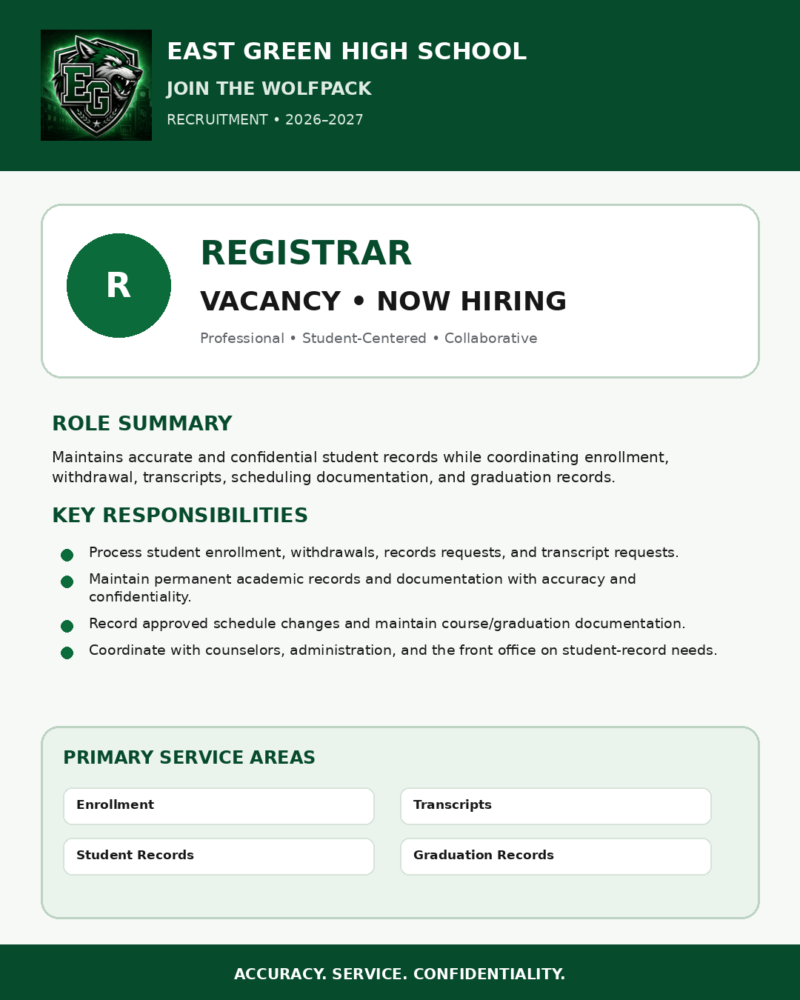
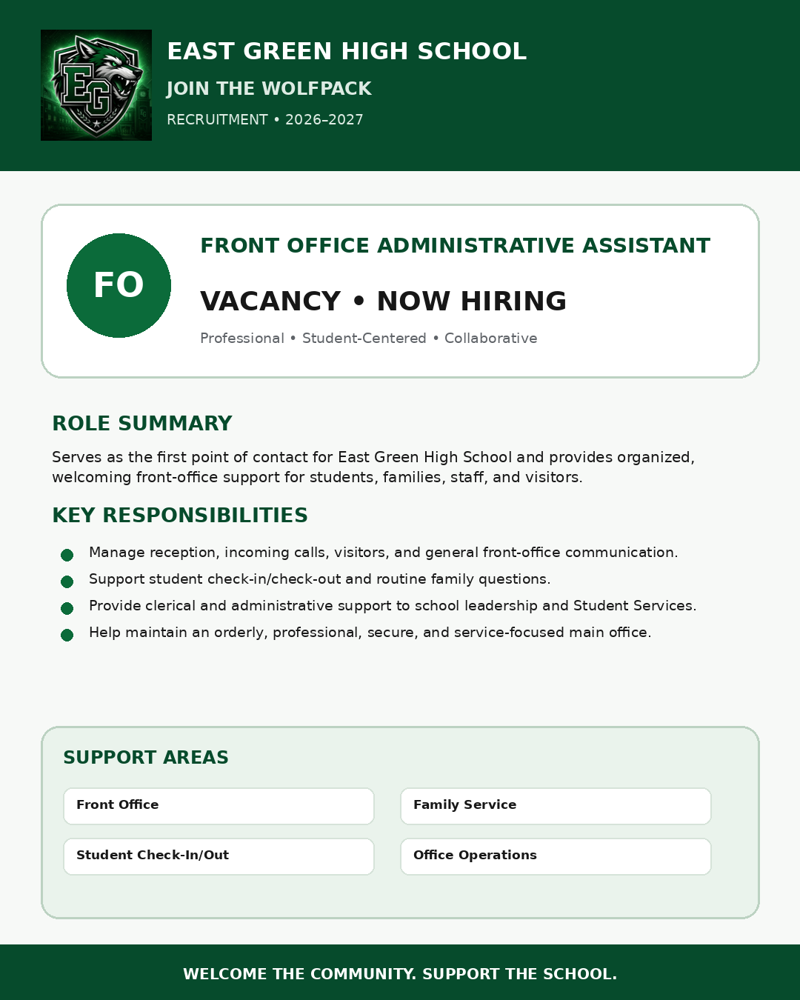

Assistant Principal of Curriculum & Instruction
Leads curriculum, instruction, assessment, academic programs, teacher support, and instructional improvement.
East Green is building a small, organized staff focused on realistic school operations, student support, instruction, and a positive Roblox roleplay environment.

These positions are currently designated as hiring/vacant in East Green's organizational structure.

Leads curriculum, instruction, assessment, academic programs, teacher support, and instructional improvement.

Academic planning, student support, graduation progress, intervention, college/career planning, and advisory programming.

Enrollment, withdrawal, transcripts, official records, schedule documentation, and graduation records.

Reception, visitors, phones, student check-in/out, office communication, and clerical support.
Follow established school policies, schedules, and role expectations.
Keep student experience, safety, support, and learning at the center of decisions.
Use clear chain-of-command and timely, respectful staff communication.
Help the school grow while respecting established systems and responsibilities.